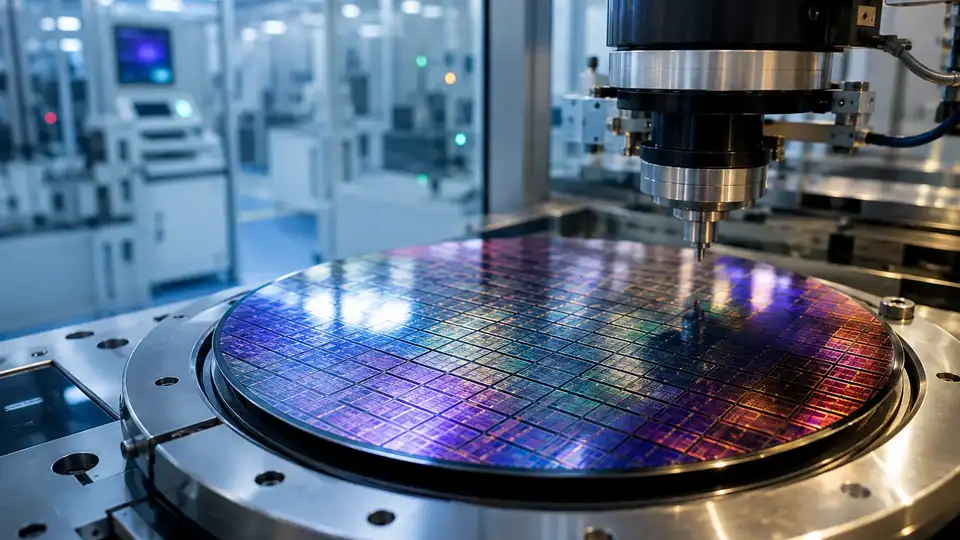
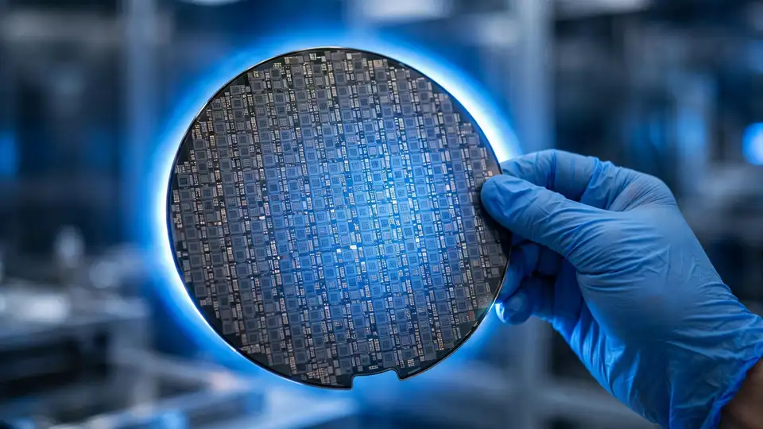

Japan's $21B bet on two New York chip fabs: GlobalFoundries builds them, Apple and Renesas line up
Japan will invest up to $21 billion in two chip factories in New York state that will be jointly owned by the U.S. government and Japanese interests and operated by GlobalFoundries, the company said Wednesday — the latest front in the global scramble for chip capacity as AI demand keeps climbing.
- Announced October 14, 2026 by GlobalFoundries, the Malta, New York-based chipmaker majority-owned by Abu Dhabi’s Mubadala Investment Co.
- Japan provides all of the investment capital while the US takes a stake in the new factories; GlobalFoundries earns fees for building and operating them, plus licensing its chip-manufacturing technology.
- Funding flows through the $550 billion Japan-US investment pact: Washington lowered tariffs on Japanese cars and other imports from at least 25% to 15%; Trump selects the funded projects, with free cash flows split evenly until a set allocation, then 90% to the US.
- About $10 billion accelerates the first fab, expected online in 2029, and roughly another $10 billion funds the second — each adding about 900,000 300-millimeter wafers a year at full operation, both at GlobalFoundries’ Malta, NY campus.
- First two customers in the queue: Japan’s Renesas Electronics and Apple; CEO Tim Breen said the company “definitely would like to give priority to US and Japanese customers.”
- Investors liked the news: GlobalFoundries shares rose more than 4% in early trading and are up over 33% this year; the package also reallocates $955 million of the company’s CHIPS Act award toward silicon photonics, silicon-germanium and advanced packaging.
The deal
The announcement came from GlobalFoundries, the Malta, New York-based chipmaker majority-owned by Abu Dhabi's sovereign wealth fund Mubadala Investment Co. Japan provides all of the investment capital while the U.S. takes a stake in the new factories; GlobalFoundries earns fees for building and operating them, plus licensing its chip manufacturing technology, Reuters reports.
The money flows through the $550 billion Japan-U.S. investment pact struck by the Trump administration last year, under which Washington lowered tariffs on Japanese cars and other imports from at least 25% to 15%. Japan has so far announced two batches of projects worth over $100 billion combined under the scheme; under the arrangement, Trump selects which projects get funded, with free cash flows split evenly between the two countries until a set allocation, after which 90% goes to the U.S. Investors liked the news: GlobalFoundries shares rose more than 4% in early trading and are up over 33% this year.
Two fabs at Malta, 900,000 wafers a year each

An initial investment of about $10 billion will accelerate construction of the first fab, expected to come online in 2029, with roughly another $10 billion funding the second, Dow Jones reports. Both will sit at GlobalFoundries' Malta, New York campus, each adding about 900,000 300-millimeter wafers a year at full operation.
GlobalFoundries will manage customer relationships, and the first two names in the queue are Japan's Renesas Electronics and iPhone maker Apple. "We definitely would like to give priority to US and Japanese customers," CEO Tim Breen told Reuters, adding that others would follow through a formal allocation process.
Folded into the same package: GlobalFoundries and the U.S. Department of Commerce agreed to amend the company's existing CHIPS Act award, reallocating $955 million toward silicon photonics, silicon-germanium, and advanced packaging at its Malta, New York and Burlington, Vermont sites.
Washington takes a stake

In a separate agreement, the U.S. government will take a 4% equity stake in GlobalFoundries itself, bringing total U.S. ownership of the chipmaker to about 7%, Breen told Reuters — direct equity on top of the traditional subsidy toolkit.
Why it matters for AI
The timing is the story: the announcement landed the same day https://aifrontierpost.com/articles/asml-record-q3-ai-demand-chip-tools-shortfall-2027-2028/ warned that even a 30% jump in chip-tool capacity won't satisfy AI demand through 2027-2028. The binding constraint on the AI buildout is increasingly physical — wafers, fabs, packaging — and governments are now buying capacity years in advance.
One caveat: GlobalFoundries builds specialty and mature-node chips, not the leading-edge accelerators that train frontier models, so don't pencil this in as new AI-GPU supply. But the $955 million earmarked for silicon photonics and advanced packaging points straight at AI data centers, where photonics is becoming the interconnect story. What to watch: whether the first fab hits its 2029 target, whether the second $10 billion tranche materializes, and how the U.S.-first customer priority holds up when allocation gets tight.